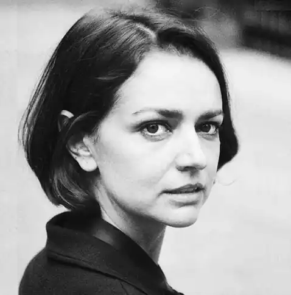

Любов Якимчук — українська письменниця (поетеса, прозаїк, сценаристка), авторка книги "Абрикоси Донбасу". Лавреатка премії американського фонду Ковалевих в номінації "Поезія", Нью-Йорк (2017).
Народилася 19 листопада 1985 року в місті Первомайськ Луганської області. Закінчила Луганський обласний ліцей при ЛНУ ім. Т. Шевченка та факультет української філології Луганського національного університету імені Тараса Шевченка, а також маґістерську програму "Теорія, історія літератури і компаративістика" Національного університету "Києво-Могилянська академія".
У 2003–2008 роках належала до луганського Літературного угруповання "СТАН". Авторка поетичних книжок ", як МОДА" (2009), "Абрикоси Донбасу" (2015). Співавторка музично-поетичного альбому "Абрикоси Донбасу". Поезії Якимчук перекладені більше, як на півтора десятки мов, зокрема, перекладені англійською, шведською, німецькою, французькою, польською, російською, чеською, словацькою, словенською, білоруською, литовською, болгарською, румунською, вірменською та на іврит. Стипендіатка програми Міністра культури і національної спадщини Республіки Польща "Gaude Polonia" (2010 рік). У липні 2015 року журнал "Новое время" включив Якимчук в рейтинг ТОР-100 найвпливовіших людей культури в Україні Через війну на сході України в лютому 2015 року батьки і бабуся Якимчук були вимушені залишити Первомайськ і переїхати на Полтавщину. У жовтні–листопаді 2016 року Любов мала тритижневий літературний тур Північною Америкою, зокрема, презентувала свої вірші в Колумбійському університеті в Нью-Йорку, в Інституті Кеннана в Вашингтоні, в Гарвардському університеті в Кембриджі, у книгарнях Філадельфії, у Пенсильванському університеті, а також у Торонтському університеті, в Альбертському університеті та університеті Мак'Юена в Едмонтоні та в "Осередку" в Вінніпеґу. Впродовж 2008–2010 років працювала ведучою на Українському радіо. З 2011 року пише статті і колонки для газети "День", з 2014 — для "Української правди". Протягом 2014–2018 років — редакторка відділу, власний кореспондент газети "Культура і життя". Як журналіст працює для чеського "Українського журналу". Створила два кіносценарії для компанії Fresh Production. Любов Якимчук у співавторстві з режисером Тарасом Томенком написала сценарій документального фільму "Будинок "Слово"" (2017) про покоління письменників Розстріляного відродження, що мешкали в одному місці (у харківському будинку Слово) та в один час (у 30-х роках ХХ ст.). У 2018 році стрічка отримала українську національну кінопремію "Золота дзиґа" в категорії "Найкращий документальний фільм".